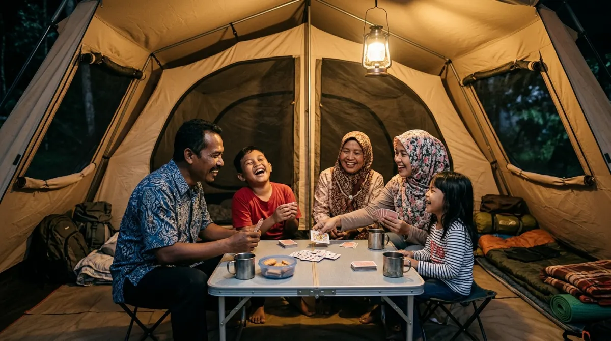

Liburan keluarga di alam memberikan waktu berkualitas dan interaksi yang utuh.
Liburan keluarga di alam memberikan waktu berkualitas dan interaksi yang utuh.Pernah nggak sih kamu merasa waktu berjalan terlalu cepat? Senin sampai Jumat sibuk kejar deadline laporan atau meeting maraton di kantor, sampai tahu-tahu anak sudah naik kelas. Momen liburan keluarga harusnya jadi waktu penebusan berharga, kan? Tapi coba bayangkan, kamu sudah susah payah mengajukan cuti, packing alat camping sampai bagasi mobil penuh, eh sesampainya di lokasi anak malah sibuk sendiri main gadget di dalam tenda karena bosan.
Sedih dan agak kesal pastinya. Rasanya pasti menyesal banget membuang uang, tenaga, dan waktu berharga yang mungkin nggak akan terulang saat mereka sudah punya kesibukan dan dunianya sendiri nanti. Makanya, sebelum penyesalan itu datang, persiapkan rencana liburanmu dengan matang. Kunci utamanya ada pada aktivitas interaktif.
Lewat berbagai pilihan permainan saat kemah yang tepat, kamu bisa menarik perhatian mereka kembali ke alam, mempererat bonding, dan menciptakan memori masa kecil yang akan selalu mereka ingat sampai dewasa. Yuk, buat liburan kali ini benar-benar bermakna!
Ekspektasi vs Realita: Kenapa Liburan Alam Sering Berakhir Hambar?
Sebagai pekerja, kita sering membayangkan liburan akhir pekan layaknya foto-foto estetik di media sosial. Duduk santai di depan tenda sambil menyesap kopi, sementara anak-anak berlarian riang di padang rumput hijau.
Misalnya saja kamu membawa keluarga ke area perkemahan bersuhu sejuk seperti di kawasan Batu, Malang, atau daerah pegunungan lainnya, ekspektasinya pasti ingin langsung rileks begitu menghirup udara segar.
Tapi realitanya? Anak mengeluh digigit nyamuk, bosan karena tidak ada sinyal internet, dan akhirnya berujung merengek minta pulang.
Ini wajar. Anak-anak generasi sekarang terbiasa dengan stimulasi visual instan dari layar. Ketika dihadapkan pada alam yang tenang, mereka mengalami "kebingungan sensorik". Sama halnya seperti kita di kantor; kalau sebuah project tidak ada brief yang jelas dari atasan, anggota tim pasti bingung mau mengerjakan apa.
Nah, di alam bebas, kamu adalah Project Manager-nya. Kamu harus menyiapkan brief berupa kegiatan dan permainan saat kemah agar mereka punya tujuan dan kesibukan yang terarah.
Persiapan Mental: Teamwork Keluarga Layaknya di Kantor
Sebelum masuk ke daftar permainan, ada satu hal penting: jadikan kegiatan berkemah ini sebagai proyek kolaborasi. Kalau di kantor kita mengenal lintas divisi, di keluarga kita punya lintas generasi.
Libatkan anak sejak awal, mulai dari mendirikan tenda. Jangan mengambil alih semua pekerjaan karena merasa bisa melakukannya lebih cepat. Beri mereka tugas kecil yang aman, seperti membentangkan alas tidur atau menata pasak.
Rasa memiliki (sense of belonging) terhadap "rumah sementara" ini adalah langkah pertama untuk membuat mereka betah. Ketika mereka merasa berkontribusi, rasa bosan akan otomatis berkurang karena mereka merasa menjadi bagian dari tim, bukan sekadar "tamu" yang dibawa orang tuanya liburan.
Rekomendasi Permainan Saat Kemah Tanpa Gadget
Setelah tenda berdiri dan perut kenyang, saatnya mengeluarkan senjata utama. Berikut adalah panduan rekreasi keluarga di alam bebas yang bisa kamu praktikkan. Semua permainan ini sengaja dirancang tanpa butuh peralatan digital atau alat mahal.
1. Berburu Harta Karun Alam (Nature Scavenger Hunt)
Ini adalah permainan klasik yang selalu sukses. Caranya, sebelum berangkat atau saat anak sedang beristirahat, buatlah daftar barang-barang alam yang harus mereka temukan di sekitar area perkemahan.
Misalnya:
- Cari 3 jenis daun dengan bentuk berbeda.
- Temukan 1 batu yang permukaannya sangat halus.
- Cari benda yang berwarna merah (bisa bunga atau daun kering).
- Temukan ranting yang bentuknya menyerupai huruf 'Y'.
Berikan mereka keranjang kecil atau kantong kain. Permainan saat kemah yang satu ini sangat bagus untuk melatih kepekaan observasi mereka. Kalau di dunia kerja, ini mirip Quality Control; mereka harus teliti mencari barang yang sesuai dengan kriteria yang diminta. Agar lebih seru, siapkan hadiah kecil seperti camilan favorit jika mereka berhasil menyelesaikan misi.

Melibatkan seluruh anggota keluarga dalam permainan kecil akan memperkuat ikatan antara anak dan orang tua.2. Estafet Cerita di Depan Api Unggun
Malam hari biasanya menjadi titik rawan kebosanan karena suasana sudah gelap dan aktivitas fisik harus dikurangi. Ini adalah waktu terbaik untuk permainan verbal. Nyalakan api unggun kecil (pastikan aman dan sesuai aturan pengelola camp), lalu duduklah melingkar.
Mulai dengan satu kalimat pembuka, misalnya, "Suatu hari, ada seekor beruang madu yang lupa tempat ia menyimpan madunya..." Lalu, minta orang di sebelahmu (misalnya anakmu) untuk melanjutkan cerita tersebut dengan satu kalimat baru. Teruslah berputar.
Biasanya, cerita akan menjadi sangat absurd dan lucu. Tidak perlu logis. Tujuan utama dari permainan ini adalah memancing imajinasi dan tawa bersama. Suasana hangat api unggun ditambah obrolan ringan ini akan menjadi memori yang sangat membekas bagi mereka.
3. Olimpiade Mini ala Pramuka
Kalau anak-anakmu sangat aktif dan punya energi berlebih, buatlah semacam kompetisi mini di siang atau sore hari. Gunakan barang-barang yang ada di sekitar.
- Lomba Lempar Batu ke Target: Gunakan batu-batu kecil (pastikan tidak tajam) dan buat lingkaran dari ranting di tanah sebagai target.
- Jalan Estafet Air: Gunakan gelas plastik (bawa dari rumah) dan minta mereka memindahkan air dari botol ke wadah lain tanpa tumpah, dengan melewati beberapa rintangan ringan.
- Balap Karung Sleeping Bag: Kalau sleeping bag kamu cukup kuat, bisa digunakan untuk balap karung jarak pendek. (Hati-hati, pilih area rumput yang empuk agar tidak cedera jika terjatuh).
Buatlah suasana kompetitif namun suportif. Jangan lupa, kamu sebagai orang tua juga harus ikut bermain, jangan cuma jadi wasit!
4. Mengenal Rasi Bintang Sederhana (Stargazing)
Di area perkemahan yang jauh dari polusi cahaya kota, langit malam adalah hiburan layar tancap paling megah yang diberikan alam. Jika cuaca cerah, siapkan alas tidur di luar tenda, matikan semua senter, dan berbaringlah bersama menatap langit.
Tidak perlu menjadi astronom ahli. Kamu bisa menebak-nebak bentuk awan atau susunan bintang. “Silakan perhatikan yang ada di sebelah sana, bentuknya mirip dengan layang-layang, bukan?” Aktivitas ini sangat menenangkan, atau dalam bahasa gaulnya, sangat "healing". Ini adalah saat yang sangat intim untuk mempererat hubungan di mana kamu dan anak dapat saling berbagi cerita mengenai cita-cita atau hal-hal ringan lainnya sebelum tidur.
5. Dapur Alam: Kompetisi MasterChef Keluarga
Memasak di alam terbuka memberikan sensasi rasa yang berbeda. Jadikan proses memasak sebagai permainan saat kemah yang interaktif.
Bagi tugas layaknya di dapur profesional. Ayah bagian menyalakan kompor portable atau api unggun, ibu bagian meracik bumbu, dan anak-anak bisa diberikan tugas aman seperti mencuci sayur dengan air bersih, menusuk sosis atau marshmallow, atau mengaduk telur.
Buatlah seolah-olah kalian sedang ada di acara kompetisi memasak. Walaupun hasil akhirnya cuma mie instan pakai telur atau roti bakar isi cokelat, sensasi memasaknya bersama di tengah udara dingin akan membuat makanan terasa sepuluh kali lipat lebih enak.
Menjaga Mood: Aturan Tak Tertulis saat Bermain di Alam
Dalam setiap kegiatan luar ruang, menjaga keamanan dan kenyamanan adalah prioritas. Sama seperti SOP (Standar Operasional Prosedur) di perusahaan, camping keluarga juga butuh batasan agar semuanya berjalan mulus dan minim konflik.
- Jangan Terlalu Memaksa Jadwal: Alam itu dinamis. Kadang tiba-tiba gerimis atau angin kencang. Kalau rencana A gagal, santai saja beralih ke rencana B (misalnya main tebak kata di dalam tenda). Jangan stress kalau itinerary tidak berjalan sempurna.
- Siapkan P3K Dasar: Namanya juga main di alam, risiko tergores ranting atau digigit serangga itu ada. Bawa obat antiseptik, plester luka, dan losion anti nyamuk. Anak yang merasa tidak nyaman secara fisik tidak akan mau diajak bermain.
- Toleransi Kotor: Biarkan baju mereka kotor terkena tanah atau lumpur. Noda tanah bisa dicuci di rumah, tapi pengalaman bermain bebas tanpa dilarang-larang akan masuk ke memori jangka panjang mereka.
Kembali ke Alam, Kembali ke Keluarga
Liburan camping bukan sekadar memindahkan lokasi tidur dari kasur empuk di rumah ke dalam tenda. Ini adalah tentang mengisolasi diri dari interupsi dunia luar—dari notifikasi email kerjaan yang tak ada habisnya, dari grup WhatsApp kantor, dan dari layar gadget—untuk benar-benar hadir seutuhnya bagi keluarga.
Setiap tawa saat estafet cerita, setiap teriakan senang saat menemukan daun berbentuk unik, dan setiap obrolan di bawah bintang adalah kepingan memori yang sedang kamu tabung. Waktu tidak bisa di-Paus apalagi di-Rewind. Anak-anak tumbuh jauh lebih cepat dari yang kita bayangkan.
Sebelum tiba masanya mereka lebih memilih menghabiskan akhir pekan bersama teman-temannya daripada denganmu, pastikan kamu sudah menanamkan kenangan terindah tentang hangatnya kebersamaan keluarga di alam bebas.
Matikan layar ponselmu sekarang, mulai rencanakan tanggal liburannya, dan buktikan sendiri keseruannya akhir pekan ini.
FAQ